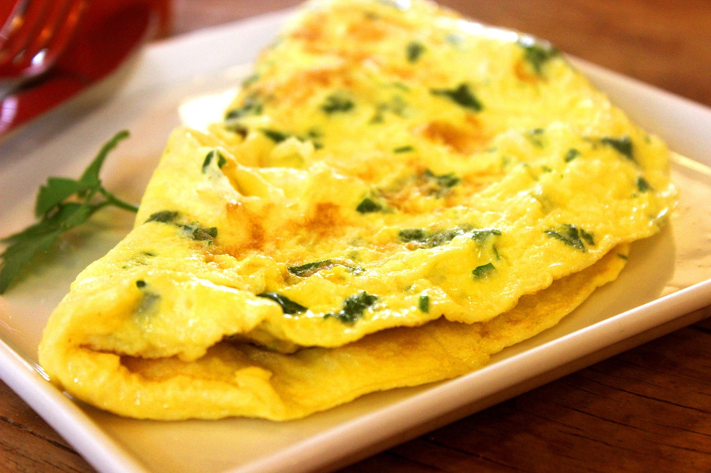

home

the humble omelette is a staple dish in the diets of many across the globe , its filling and easy to make .
ingredients:
- 3 large eggs
- 2 tablespoons of butter
- half a teaspoon of salt
- fresh cracked black pepper
steps:
- crack the eggs in a bawl and mix it thoroughly .
- in a pan on low heat add the butter and as soon as it starts to foam , add the eggs and whisk vigorously and constantly to prevent curdling
- cook for 10 minuets or until the eggs start tof firm up and then remove from the heat and let the residual heat finish the cooking process .
- finish with sal and freshly cracked black pepper and serve warm with toast.